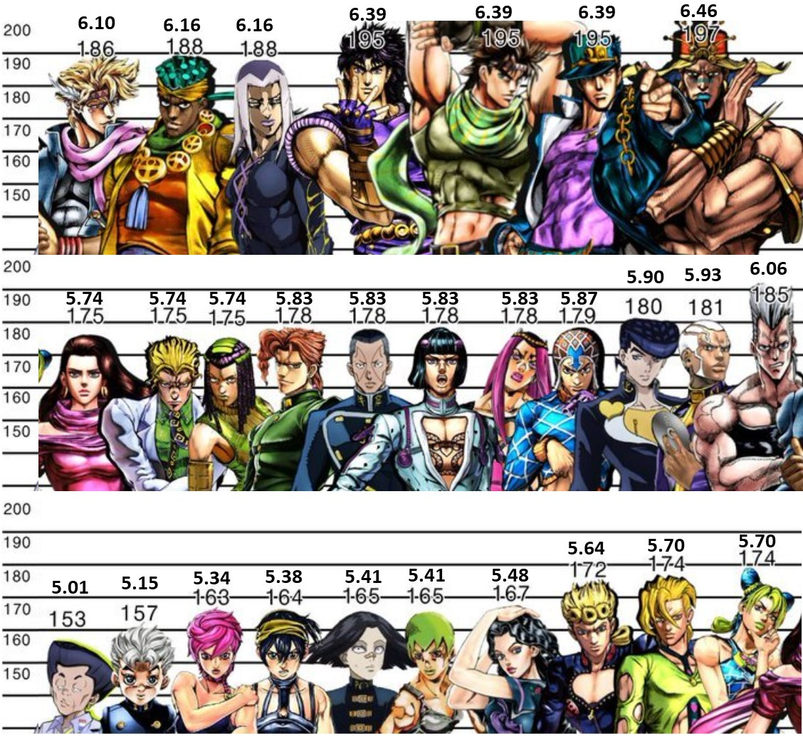

JoJo é o segundo mangá mais longo da história e o mais Bizarro da Shonen Jump, não é de se estranhar que depois de tantos anos de publicação muitas mudanças aconteçam, mas nesse caso as mudanças são radicais e ocorrem durante a série de forma evidente. Um exemplo disso são alguns personagens que tem um design de uma maneira e em menos de dois capítulos mudam completamente, um exemplo disso é o personagem Iggy.
Realmente estranho, mas justificável, afinal no caso de Iggy deve ter sido alguma decisão editorial.Um fato interessante é que o anime foi fiel ao mangá o bastante para manter o personagem com seus dois designers, mesmo parecendo meio Bizarro para quem está acompanhando.
A saga onde essas mudanças foram mais evidentes foi justamente na parte 4, onde Araki decidiu substituir seu visual exagerado, cheio de músculos por um visual mais simples. Deve ter sido por que o padrão de beleza dos anos 90 já não era mais o mesmo. O interessante é que essa mudança ocorria bem na sua cara durante os capítulos.
E a costela, cade?
Nessa parte existem diversos momentos assim. Uma previa das mudanças que Araki tem passado, as mudanças foram tantas que hoje em dia o autor além de ter um traço completamente diferente das primeiras partes, parece não conseguir mais redesenhar com seu traço antigo. Por mais que nós adoremos os traços clássicos de Jojo parece que o autor não está muito satisfeito, prova disso é que redesenha constantemente seus antigos personagens, agora com seu novo traço.
Outra curiosidade é que até mesmo o game homenageia essas mudanças de traços do autor. O personagem Alessi no mangá tem a capacidade de tornar os personagens cada vez mais jovens e no game não é diferente. Porém nem todos os visuais jovens dos personagens foram dados pelo autor, o que fez que no game alguns personagens recuperem seu designer antigo ou se transformem em outros personagens, como por exemplo Iggy que recupera sua antiga versão ou Dio que é substituído por seu capanga vampiro. Uma coisa bastante divertida de se fazer no game, ver as diferentes versões dos personagens. Caso não possuam um PS1, vou deixar o vídeo abaixo.
Deixar vídeo abaixo. Ou não sla lmao.
Hokuto no Ken foi um marco na história dos mangás, tem quem diga que foi percursor do gênero Seinen. Foi um mangá tão importante nos anos 80 que influenciou diversas séries do período. Graças a sua importância a série foi homenageada por diversos autores de mangás como Togashi e Araki. O personagem Kenshiro e Jonatham tem similitudes muito evidentes.
No anime e no mangá os personagens principais o conhecem em um restaurante, no game de super nintendo o conhecem em uma biblioteca, nos OVAs o conhecem em um barco.
JoJo foi uma febre tão grande durante seu período de lançamento que inspirou designers de diversos personagens em games de luta. Abaixo está alguns exemplos de visuais inspirados em personagens de JoJo.
6- Jotaro é o JoJo mais conhecido
Por mais que a maioria das pessoas que conheço prefiram Joseph(Assim como eu) o personagem Jotaro é o mais querido pelos fans de Jojo não só no japão como nos Estados Unidos. Seja pelo seu jeitinho Brocutu ou seu visual exagerado e seu boné estiloso, a verdade é que o simbolo de Jojo está sempre relacionado a esse personagem. A fama nos Estados Unidos pode ter sido derivada do fato de que o primeiro material relacionado a Jojo a chegar nas americas foi o game no qual Jotaro é o principal. A fama do personagem é tanta que sempre que se tem um novo produto relacionado a JoJo é Jotaro que fica na capa.
A capa do game All Star Battle é variada nas diversas regiões em que o game chegou. Como por exemplo a capa americana que faz referencia ao game de PS1. Já a capa Italiana é a mais curiosa, já que o personagem que mora na Itália Giorno aparece em destaque, parece uma ótima cartada de marketing não é?
No anime de Jojo um pequeno easter egg aparece quando Joseph está lendo uma história em quadrinhos. Trata-se de Baooh! um antigo mangá do autor, em que Araki avia feito antes de JoJo’s Bizarre Adventure. Curiosamente no mangá original Joseph estava lendo o primeiro HQ de Superman mas isso foi alterado para não oferecer problemas de direitos autorais.
Antes de estrear o primeiro anime de JoJo ouve uma série de ovas que adaptavam a terceira parte do mangá. Porém vale lembrar que a adaptação, mesmo que bem animada para a época, possui muitas mudanças. Por começar pelo clima pesado e sem piadas, alguns personagens alterados, algumas situações tem ordem invertida e alguns personagens substituídos. Um exemplo disso é o caso da velinha seguidora de Dio, Enya que é substituída por essa mulher jovem e bonita.
Outra das grandes mudanças é o famoso meme de Dio que é substituído por um caminhão, dando origem a uma das cenas mais legais do Ova, Jotaro saindo do fogo para enfrentar Dio.
Aposto que dessa você não sabia não é? Em comemoração aos 25 anos de Jojo, Araki encontra com esse mito do cinema Clint Eastwood, responsavel por diversos filmes de faroeste, conhecido por sua cara de mal.Depois de Araki conseguir cumprimentar o ator, ainda pediu para o mesmo tirar uma foto fazendo pose de Jotaro.